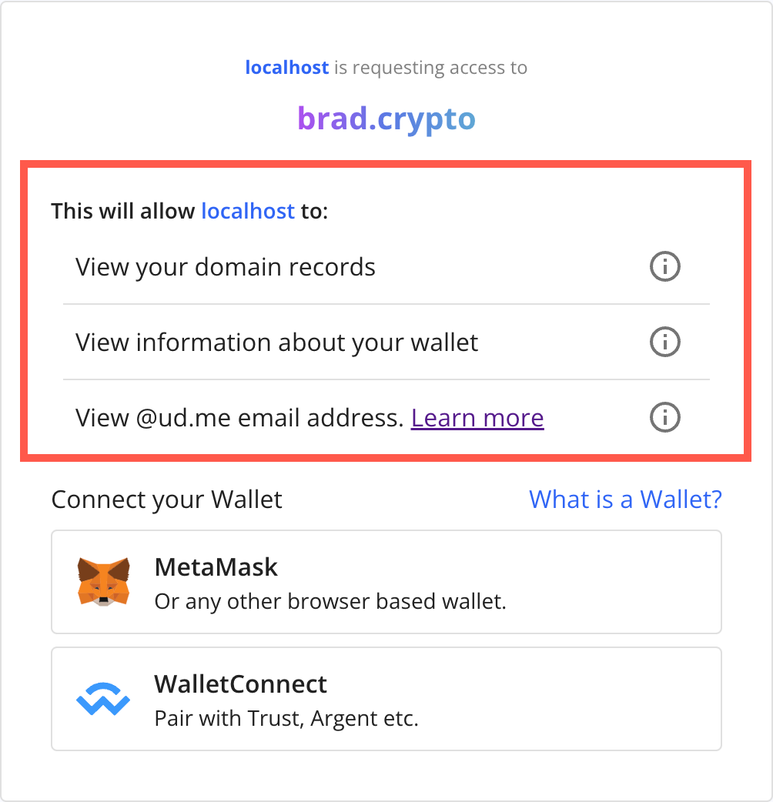
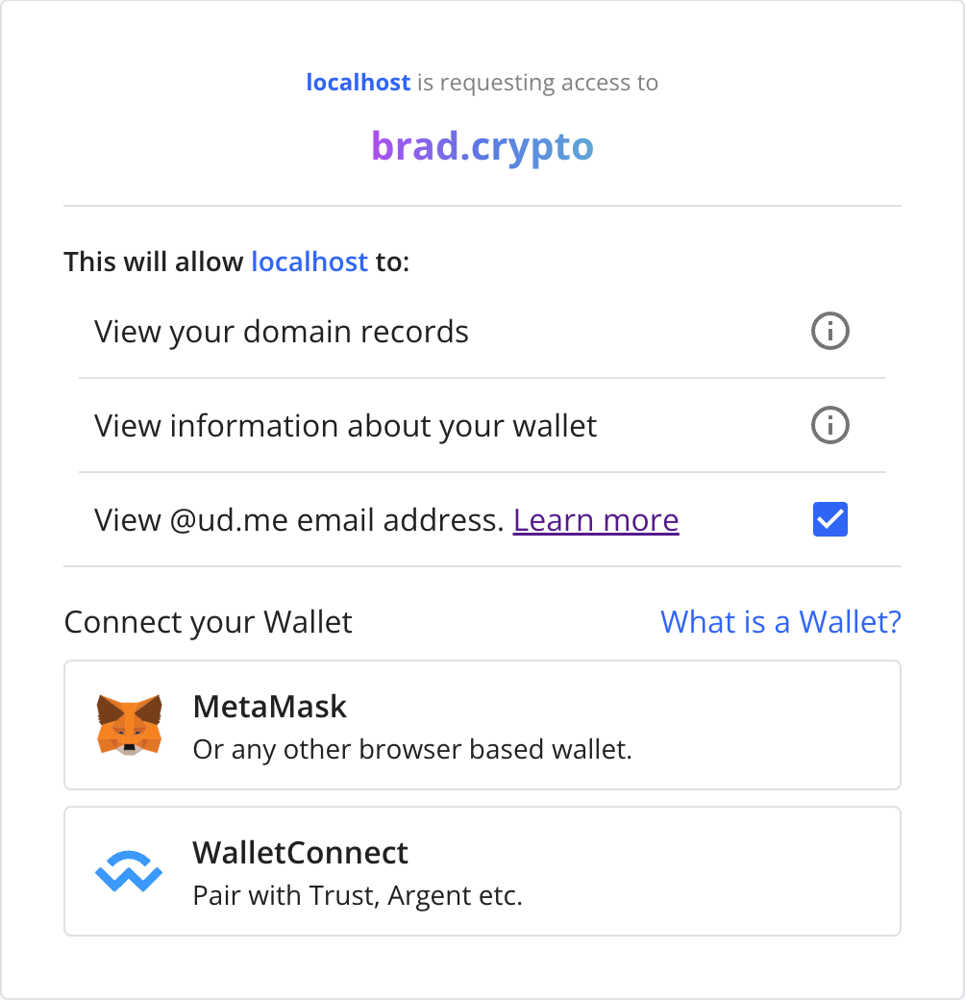

Scopes for Login
Login with Unstoppable uses scopes to request data about a user. Instead of requesting all of a user's information at once, scopes are used to make granular requests (for example, a wallet address or an email address). Each scope returns a set of user attributes called claims. If the user authorizes the access associated with a scope, the claims are returned inside the ID Token associated with that authorization.
The scopes included in the authorization request are determined by the scope parameter of the UAuth configuration options, which is a list of case-sensitive strings called scope tokens separated by spaces. Applications can request additional scopes by adding the respective tokens to this string.
{
"scope": "openid wallet email:optional"
}The scopes requested by an application will vary depending on the type of user data needed by the application and will be presented to the user in a list.

Login with Unstoppable supports the following scopes which are detailed below:
Optional Scopes
Many login scopes have scope:optional variants that allow users to opt in to or out of sharing requested information, instead of requiring it to login. These appear with checkmarks next to them in the login request. If the user consents to sharing this information, the claims associated with the standard scope will be returned.
email:optional scope
scope and scope:optional, the request will fail and throw an error. Applications should only request one or the other.
Sub Scopes
For scopes such as profile and social which encapsulate multiple subscopes, an application may request any combination of the scope and its sub scopes. The more specific optional or required scopes will always take priority. For example, if an application requests social and social:twitter:optional, all social subscopes except for twitter will be required.
openid
optional: false
The openid scope is a special scope that is required for all Login with Unstoppable requests. The scope indicates to the server that it should return an OIDC compatible ID Token containing the rest of the user’s claims.
wallet
optional: false
The Login with Unstoppable wallet scope is best used for retrieving metadata about the user’s wallet. It returns two custom claims:
wallet_address- The address associated with the domain.wallet_type_hint- A string indicating the type of wallet associated with the domain with three possible values:web3- A web3/browser-based wallet like MetaMaskwalletconnect- Using the WalletConnect protocolcoinbase-wallet- Using the Coinbase Wallet
optional: true
The Login with Unstoppable email scope can be used to retrieve the users's domain.tld@ud.me Unstoppable Email address, which provides Unstoppable Domain owners with a proxy email service that doesn't share their private address.
Unstoppable email is disabled for domains by default. If a user has not enabled this feature but consents to the email scope, a unique, DApp-specific email address is generated and authorized for their domain. This unique email address is then returned in the email claim.
humanitycheck
optional: true
The Login with Unstoppable humanity_check scope must be added to the library for existing apps that want to integrate the Humanity Check feature using Persona.
After the user authenticates and proves their identity with the Persona authorization system, the application will receive a humanity_id, which is a unique identifier for each user to serve as that user's "humanity check."
See Humanity Check for Login for more information on identity providers, humanity check, and plans for future releases.
profile
optional: true
The Login with Unstoppable profile scope is used to retrieve profile metadata the user has associated with their domain. It returns the following claims:
name- Display namepicture- Cover photo URIuri- ud.me profile URI (e.g.https://ud.me/domain.tld)ipfs_website- IFPS website hashwebsite- Web2 URI to the IPFS hashlocation- The domain owner's location
Individual profile subscopes (e.g. profile:name) may also be requested separately or in combination with the profile scope for more granular permissions. All subscopes support the :optional flag. See Sub Scopes for more information.
social
optional: true
The Login with Unstoppable social scope is used to retrieve metadata about the user's social media profiles.
Individual social subscopes may also be requested separately or in combination with the social scope for more granular permissions. All subscopes support the :optional flag. See Sub Scopes for more information.
social:twittersocial:redditsocial:youtubesocial:discordsocial:telegram
badges
optional: true
The Login with Unstoppable badges scope is used to retrieve a list of badges associated with a user's domain profile. It returns the following claim:
"badges": [
{
"code": "NFTDomainHolder",
"description": "Holds Unstoppable Domains NFT domain",
"logo": "http://storage/googleapis.com/unstoppable-client-assets/images/badges/ud-logo.svg",
"name": "NFT Domain",
}
],badges claim